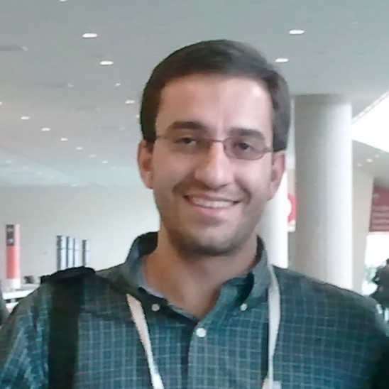
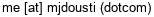

|
Mohammad Javad Dousti
|
 |
Mohammad Javad Dousti, Ph.D.
Research Scientist, Facebook AI
Email: 
|
Education
Awards and Honors
Selected as the best poster nominee for the dissertation abstract in Design, Automation, and Test in Europe (DATE) PhD Forum, 2015
Awarded Google travel grant for attending 41st International Symposium on Computer Architecture (ISCA), 2014
Selected dissertation abstract for DAC PhD Forum (~30% acceptance rate) and awarded the corresponding scholarship, 2014
Awarded SIGDA's CADathlon scholarship (held in conjunction with ICCAD), 2013
Awded Design Automation Conference (DAC) Young Student Support, 2011 & 2012 (two times)
Awarded USC Provost's Ph.D. Fellowship, 2010
Ranked 1st in B.Sc. among 25 hardware engineering students
Ranked 2nd in Youth Khawrazmi Festival (a national festival for students’ inventions) for creating “soccer player robot” in Tehran, 2004
Ranked 3rd in the second Babol Azad University contest (Robotic Contest), 2003
Ranked 2nd in the second HelliCup (Robotic Contest) & announced as the qualified junior team for international RoboCup, 2003
Ranked 1st in the first HelliCup (Robotic Contest), 2002
Recognized as a talented student in the entrance exam of National Organization for Development of Exceptional Talents (NODET) for middle and high school, 1999 & 2002
|